R1 Stand Explore: Browser Twin (three.js / WebGPU)
2026-11-20 · Blazor WASM control UI (src/PoRobotTrain.Client) · Chrome on an Intel iGPU (WebGPU) and headless Chrome (WebGL2 fallback). Procedure: docs/web_twin.md.
Test data. The "after" views of physical-robot telemetry (temperatures, sim vs real error, live mirror) use a synthetic status that the test browser injected in place of /api/robot/status. No robot was connected. Every POST from the test browser was answered locally and none reached the RobotControl service.
Before
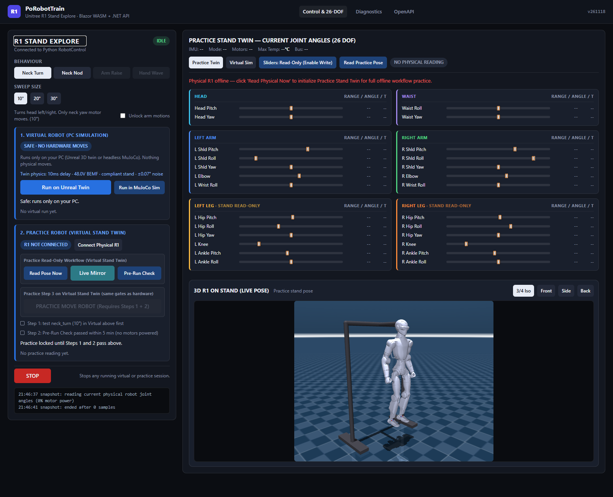
Before: the 3D panel was a MuJoCo PNG rendered by the Python service, re-fetched on each pose change. Fixed four cameras, no status overlays.
After
All five HUD anchors are retained: 1. VIRTUAL ROBOT (Run on Unreal Twin / MuJoCo Sim), 2. PHYSICAL ROBOT (Connect / Read Pose / Live Mirror / Pre-Run Check), Move Physical R1 (still gated by Steps 1 + 2 and the confirm dialog), STOP with the L2 + B reminder, and the details log.
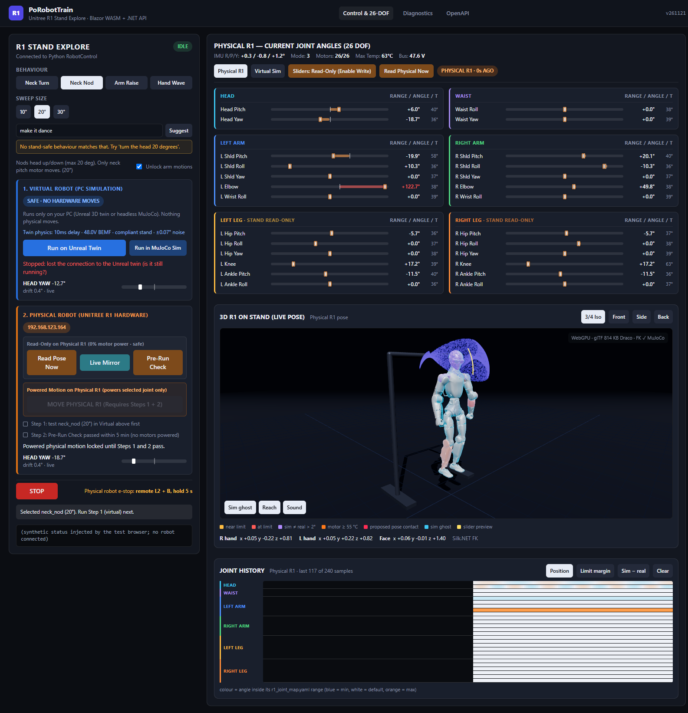
Full page at 1600 px: the assistant box sits under Sweep Size, the live 3D twin replaces the PNG, and the joint-history heatmap follows.
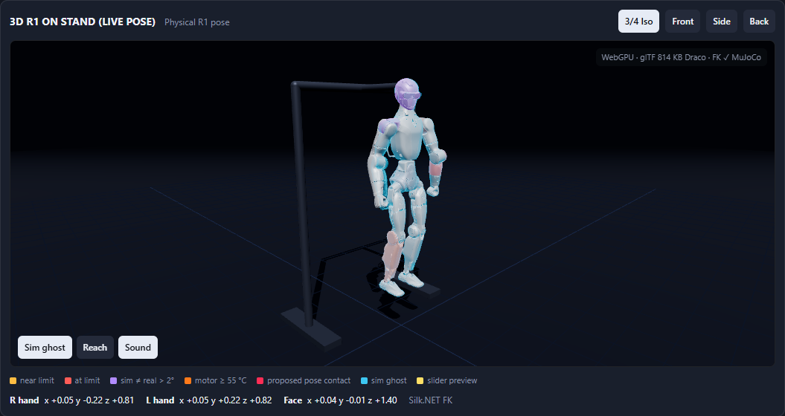
three.js WebGPURenderer with TSL materials. The left elbow at its limit is red, the head (sim leads real by 6°) is violet, the hot right knee (63 °C) is orange with nebula heat haze, and the cyan ghost is the virtual-sim pose. The read-out under the view is Silk.NET FK.
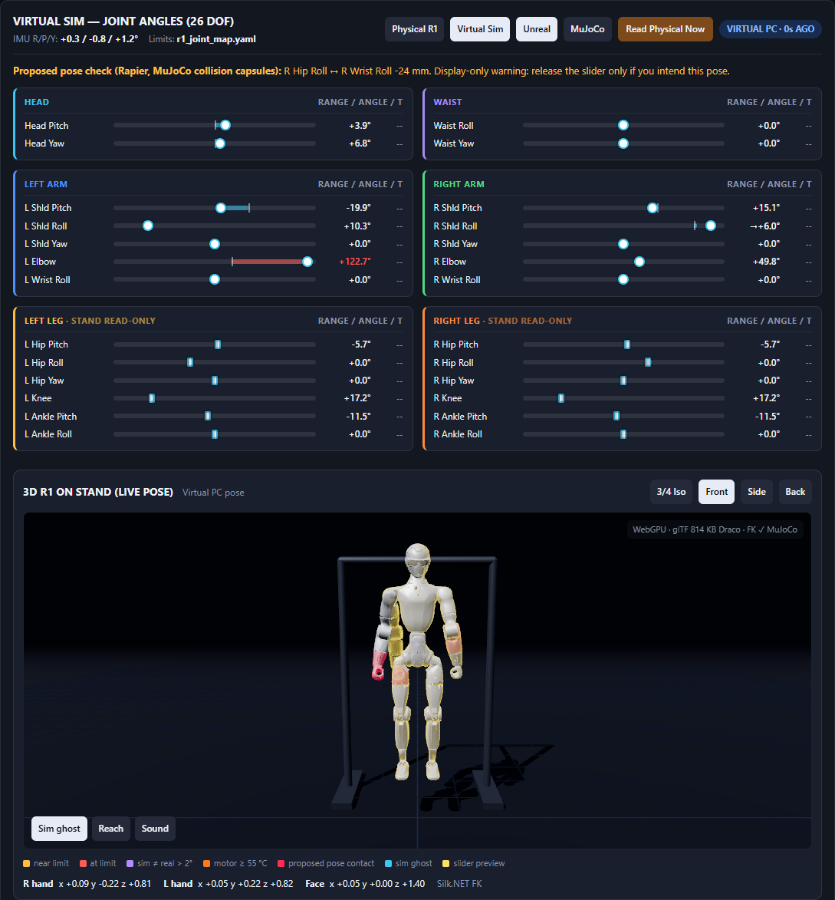
Dragging R Shld Roll to +6° (not released, so nothing is sent). The yellow ghost shows the proposed pose. Rapier finds the right wrist 24 mm into the right hip capsule (MuJoCo's own collision geometry), both links turn red, and the panel shows a display-only warning.
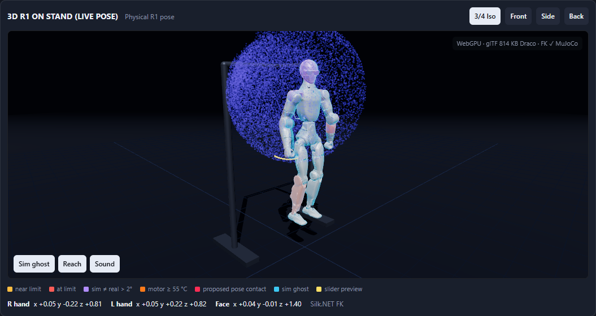
Reach for Hand Wave at 20°, computed by a WebGPU compute shader. The dim cloud is 16,384 right-arm configurations inside the joint limits. The bright arc at the hand is what this sweep covers. GPU and CPU paths agree to 18 µm.
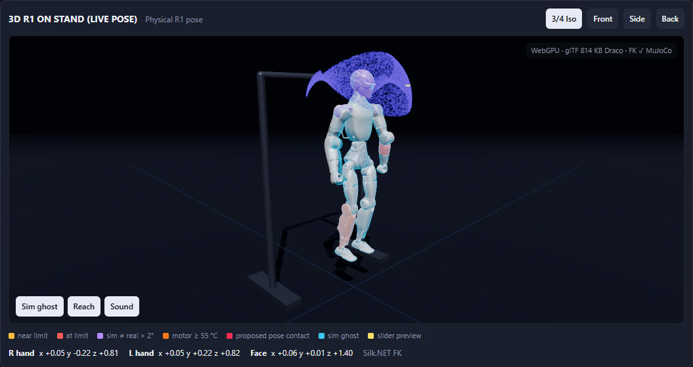
Neck behaviours show the gaze envelope: a point 0.3 m in front of the face for every head pitch and yaw inside the limits.
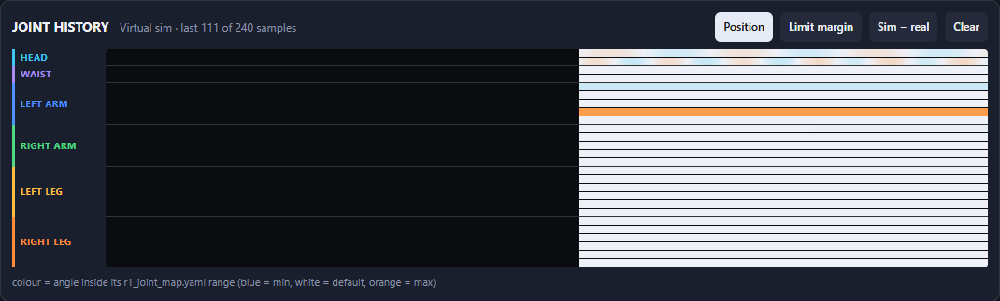
SkiaSharp joint history: 26 rows by 240 samples. Modes are position-in-range, limit margin, and sim minus real.
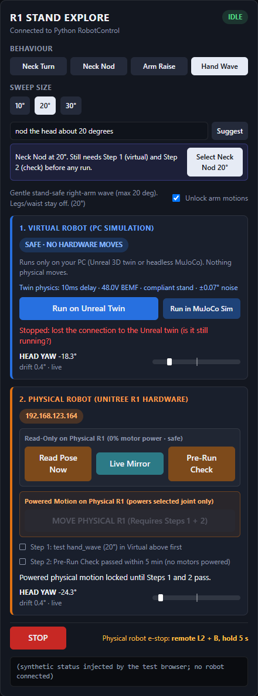
Transformers.js (MiniLM, local). "nod the head about 20 degrees" → Neck Nod 20°. Applying it only changes the selection. "bend the left elbow to 30 degrees" → the L Elbow slider, never a multi-joint behaviour. "make it dance" → no match.
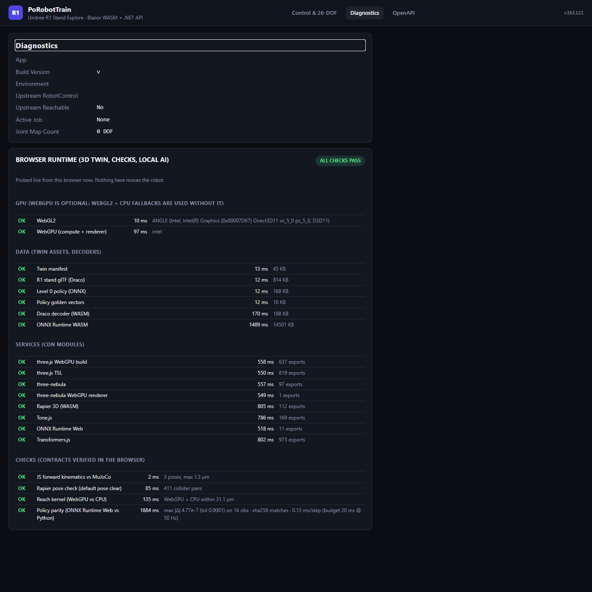
/diag live probes: GPU, twin assets, 8 CDN modules, and checks. JS FK matches MuJoCo to 1.3 µm. The default pose is clear in Rapier. The WebGPU reach kernel matches the CPU path to 31 µm. ONNX Runtime Web reproduces Python's policy actions to within 4.8e-7, the sha256 matches the validated policy, and one step takes 0.13 ms (the 50 Hz budget is 20 ms).
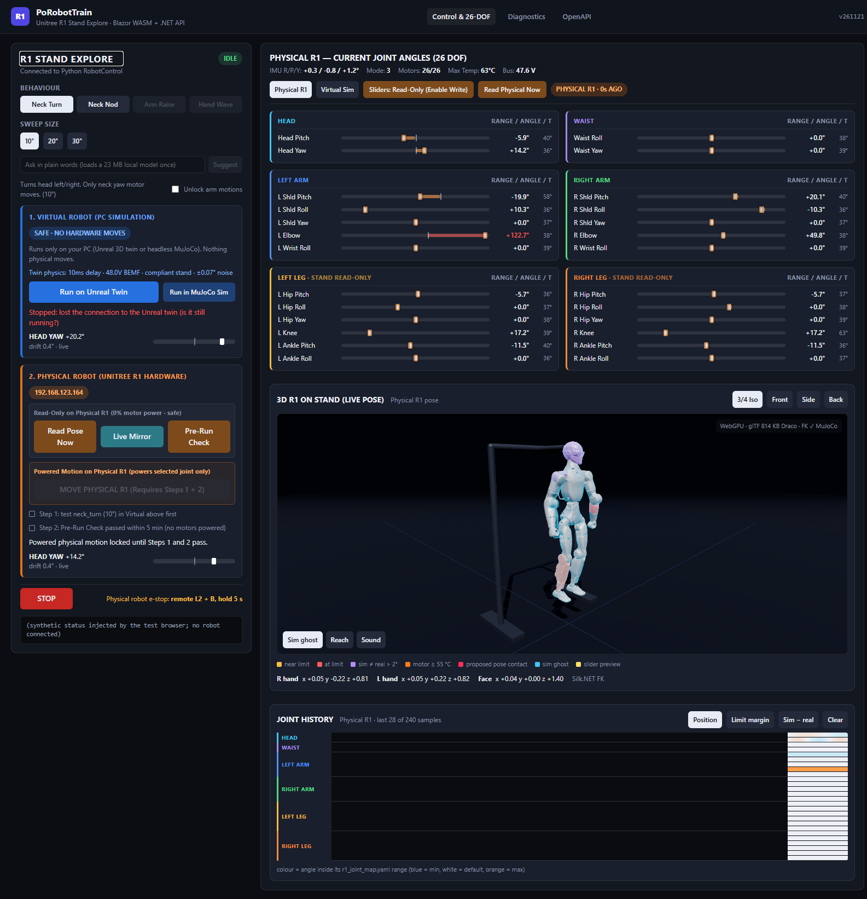
1600 × 900 landscape.
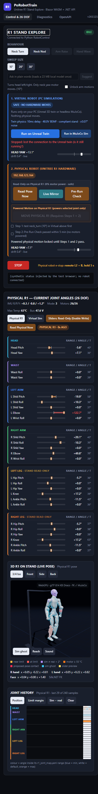
450 × 800 portrait: no horizontal scroll (the header now wraps below 560 px).
Verification
check
result
pytest (full suite incl. test_web_twin.py)
pass
dotnet test PoRobotTrain.Unit (Silk.NET FK vs MuJoCo, twin joint order vs RobotJointCatalog)